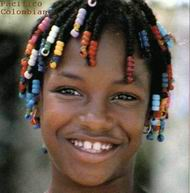

|

| |
Una pregunta espinosa
¿Existen las razas humanas?
En las últimas décadas se popularizó la idea de que las razas humanas no existen. Varios libros de texto, muchos profesores y algunos investigadores, sin demasiadas precisiones sobre el asunto, propalan esta idea que siembra confusión en el público. Nadie duda del trasfondo político del asunto y pocos se animan a profundizar sobre sus implicancias.
A nadie puede pasársele por la cabeza que las razas de perros no existan. Nadie en su sano juicio puede negar que los caniches y los ovejeros belga son dos grupos bien definidos, como tantos otros. Ni que sus características no son sólo morfológicas: también el temperamento, la inteligencia y otras cualidades comportamentales van asociadas a la raza del pichicho. Tampoco a ningún ser humano se le escapa que la existencia de las razas está sustentada por la naturaleza, o sea que es un fenómeno palmariamente biológico, no social. Y si nos dijesen que de una pareja de bulldogs nació un cachorrito pequinés sabríamos que nos están queriendo meter el perro. En este aspecto la biología es muy sencilla.
Pero con los humanos... ¡ay los humanos!... la cuestión es más complicada. Parece ser que hace unos 30 años, un señor llamado Richard Lewontin hizo un estudio genético en humanos, y proclamó que la mayor parte de las diferencias genéticas entre humanos pueden encontrarse entre personas cualesquiera de diferentes razas. Y que si uno miraba genes en vez de caras, las diferencias entre un africano y un europeo serían apenas mayores que las encontradas entre cualquier par de europeos. La conclusión de esto es que las razas humanas, biológicamente, no significan nada y no hay ninguna justificación para que el concepto de raza humana persista. Años más tarde, agregó que la noción de raza es una construcción social basada en el poder socioeconómico. Estas afirmaciones no tienen pies ni cabeza, no resisten el menor análisis. Pero, fíjese usted: son ficciones tranquilizadoras, políticamente correctas. El gran público, legos y expertos, las adoptó con gozo. Todos escucharon lo que querían escuchar.
Esta movida absurda no viene sola. Vestida de progresismo, suele estar acompañada por varias posturas que tienen que ver con cuestiones no menores como por ejemplo el sexo (se plantea la igualdad entre hombres y mujeres y quien se oponga será sexista), también con la personalidad y la inteligencia (afirman que no son heredables, que sólo dependen del entorno social), y con la genética en general (denuncian un presunto determinismo biológico y cierto reduccionismo). Todas estas cuestiones están juntas en un movimiento de igualitarismo que básicamente reza: todos los seres humanos son iguales, las diferencias las produce la cultura. El objetivo es loable: si todos los seres humanos son iguales, entonces todos merecen los mismos derechos (la pretensión más justa, si la hay). Pero el fin no justifica los medios, y los medios equivocados no conducen a buenos fines.
El movimiento igualitarista es pesado. A quienes osan manifestar oposición a estas ideas tan democráticas suele tildárselos de racistas, sexistas, cuando no fascistas. La no existencia de razas humanas ha tenido tanta propaganda que muchos biólogos sensibles, y sobre todo aquellos que odian el racismo, se tentaron de comprarla y lo hicieron con cierta ligereza y la repiten, uniéndose automáticamente al club de los (presuntamente) progresistas. Las declaraciones oficiales de la ciencia se proclamaron en sintonía. La revista Nature Genetics dijo en un editorial que “la raza no tiene base biológica”. La revista Science sostuvo en un artículo que “el mito de que las ´razas´ tienen diferencias genéticas importantes no tiene valor alguno luego de lo demostrado por la evidencia genética”; el entrecomillado de razas, dentro de la declaración, parece indicar que razas alude a una entidad inexistente... mitológica. La propia UNESCO proclamó: “las razas son más un mito social que un fenómeno biológico”. En la propia Facultad de Ciencias Exactas y Naturales de la Universidad de Buenos Aires la mayoría de los biólogos opinan que el concepto de raza humana no tiene suficiente entidad biológica, y la opinión en contrario que vierte esta nota refleja exclusivamente la mía personal.
Qué son las razas
El origen de las razas podemos encontrarlo en la migración de poblaciones que se aislaron naturalmente entre sí y, dentro de ellas, por separado, evolucionaron rasgos diferentes surgidos posiblemente en respuesta adaptativa a los distintos ambientes que a cada población le tocó. El intercambio genético entre poblaciones es ínfimo. Recuerde el lector que si hablamos de razas, estamos hablando de un fenómeno muy antiguo, digamos entre 10.000 y 90.000 años. Antiguo y prolongado. Durante esos siglos tan pretéritos no había trenes ni aviones, y en muchos lugares y períodos ni siquiera caballos. O sea que los desplazamientos humanos eran a pata y para intercambiar algo entre poblaciones como vasijas, chucherías, cultura, genes, o lo que sea, había que desplazarse a pie. Por eso decimos que los pueblos se aislaron. De modo que el intercambio genético entre las poblaciones es mucho (infinitamente) menor que dentro de cada población. Luego, el intercambio genético permanente (no sé si me entiende...) genera cierta homogeneidad biológica. O sea: los individuos de una población se vuelven cada vez más parecidos entre sí y más desiguales con los de la población de enfrente. Se trata de un fenómeno muy conocido y aceptado que, de hecho, es el mismo por el cual se generan nuevas especies. Cuando no hay cuestiones políticas o ideológicas de por medio, raza y sub-especie son sinónimos y nadie se alarma.
Las razas humanas se definieron y sustentaron históricamente en diferencias morfológicas y, naturalmente, visibles, como el color de la piel o la forma de los ojos. Cuando un negro elige casarse con una negra no le estudia el grupo sanguíneo ni el gen inmunohistopatológico; simplemente se siente atraído por la hermosura de su piel lustrosa, la mirada penetrante... y ya. Si la genética, estudiando otros genes que no sean los que determinan el color de la piel o la forma de los ojos o algún otro carácter racial, coincide o no coincide con las posibilidades y tal vez las preferencias de las personas, no puede caer en la actitud presuntuosa de abolir un concepto en el que poco pincha y menos corta. Pongámoslo en otros bichos. Si los genetistas descubriesen que la variabilidad genética entre cualquier par de vacas es independiente del corral de donde fueron tomadas y a partir de esa información declarasen que las razas bovinas no existen, los productores, sencillamente, se partirían de risa. Ahora, tan fácil es definir una raza humana como admitir que se sustenta en un hecho biológico, porque lo que el negro y la negra hacen en la cama a la hora de engendrar un hijo no es precisamente una discusión socioeconómica. Y el niño saldrá negrito y parecido al padre... o bien, estaremos en problemas.
El error de Lewontin
El error de Lewontin -así se ha dado en llamar- es bastante elemental, por no decir grosero. Cualquier característica tomada individualmente, sobre todo una invisible a simple vista, es un mal indicador de variabilidad entre individuos o poblaciones ya que puede provenir de un tiempo muy anterior a la separación en razas, o provenir de otras circunstancias. Pero tomando grupos de características, o clusters, es fácil ver que las distintas variantes acompañan, en conjunto, a las poblaciones biológicas a las que pertenecen. Las variantes van correlacionadas, y esa correlación es la información genética que a Lewontin se le escapó. En 2002, un estudio llevado a cabo en las universidades de Southern California y de Stanford, mostró que de una muestra de gente tomada de todo el globo y ordenado por similitud genética de unos centenares de genes por medio de una computadora, o sea, a ciegas, se obtienen básicamente cinco grupos humanos coincidentes, más o menos, con las principales razas tradicionales: europea, africana, asiática, polinésica y amerindia. Como si los hubiésemos separado, de entrada, mirándoles la cara. O sea, las cosas en su lugar.
Zona peligrosa
No cabe duda de que las razas humanas existen; no son espejismos, del mismo modo que las razas en cualquier otra especie. Ahora bien... si las razas mantienen diferencias morfológicas, ¿no pueden también mantener diferencias comportamentales? ¿De inteligencia, por ejemplo, de talento...? ¡¿Y por qué no?! Ayyyy... cuántos lectores “políticamente correctos”, “progresistas de izquierda”, si llegaron hasta este párrafo están queriendo lapidarme, o realizarme una denuncia por discriminación. Tómeselo con calma, que todavía falta.
¿Hay razas superiores? Una pregunta tan ambigua no puede formularse sin mala leche. Pero igualmente trataré de contestarla. Cualidad por cualidad, no parece haber mucho problema en formularla. Tal vez la raza negra sea superior en agilidad, o la asiática en inteligencia. Formularla en general, en cambio, parece estúpida. Pero aún cuando acordemos un criterio para valorar cada característica por separado y hacer un ranking general entre todas (tarea fuertemente arbitraria y subjetiva), el resultado no haría cambiar nuestra moral humana de reconocer los mismos derechos a toda la especie, y el mismo respeto a cada individuo. No se me escapa que reconocer las diferencias raciales conlleva un grave peligro. Todas las verdades son peligrosas, algunas más, otras menos. Como la energía nuclear... claro que es peligrosa, pero muy mal haríamos diciendo que la transformación de materia en energía es una mentira, un verso político, o un invento belicista de algún maldito hombre blanco.
Es cierto que la humanidad padeció grandes calamidades por culpa del racismo y la xenofobia. Desde la discriminación, la explotación, la esclavitud, hasta el genocidio. Pero tales males no se pueden combatir con la mentira; hay que combatirlos con la verdad, con la moral y con la ética. Es mentira que somos iguales. Somos diferentes, grupal e individualmente. Hay diferencias de raza, de sexo, de cultura... No hay dos personas iguales. Pero nuestra moral nos indica que nadie debe tener ni más ni menos derechos que otro, ni más ni menos obligaciones tampoco. Dar la pelea en estas condiciones es más difícil, pero es más ético.
Al mezclar la ciencia con la política, algunos genetistas están cometiendo la misma infracción que otros científicos a los que acusan, y con razón, de racistas. Y lo peor de esto es que al ignorar las diferencias genéticas y negar la existencia de las razas, caen en manos de los racistas de verdad, quienes pueden demoler fácilmente esa declaración y reforzar su postura. El igualitarismo flaco favor le hace a la lucha contra el racismo. Es más honesto intelectualmente reconocer las diferencias, y señalar que su existencia no implica supremacía entre razas ni desigualdad en derechos.
Algunos derechos reservados. Se permite su reproducción citando la fuente. Última actualización mar-07. Buenos Aires, Argentina. |